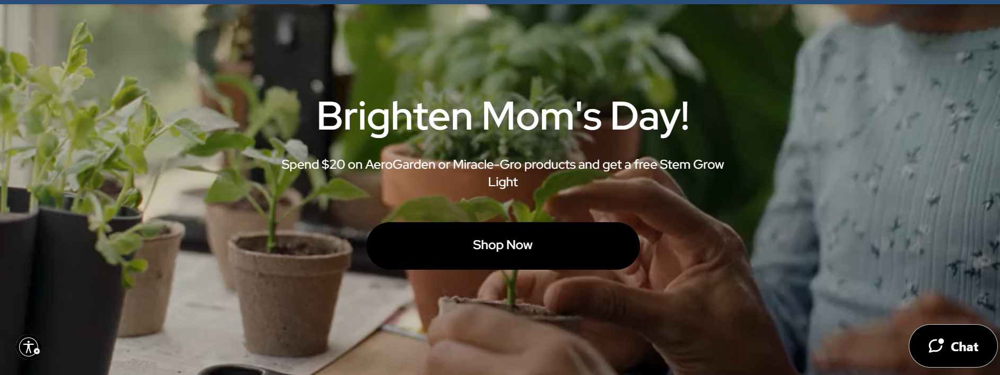
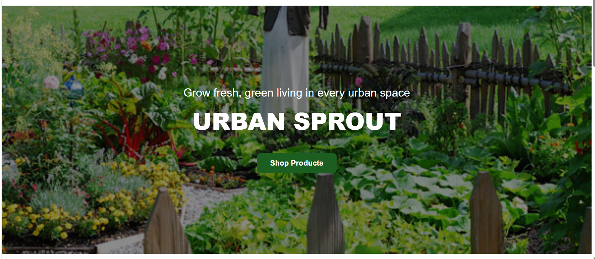
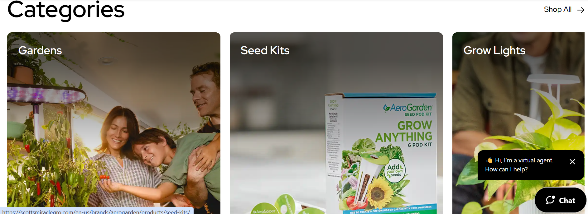
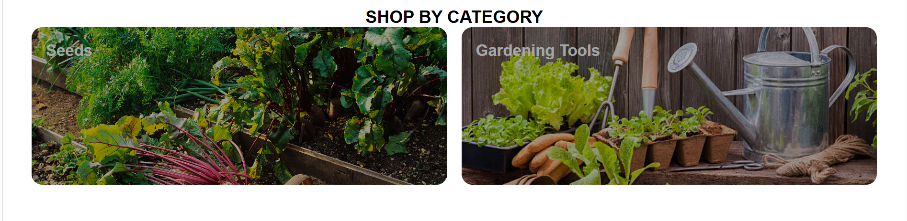
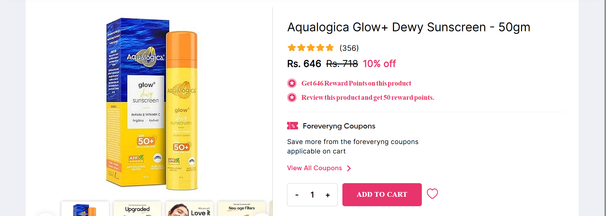
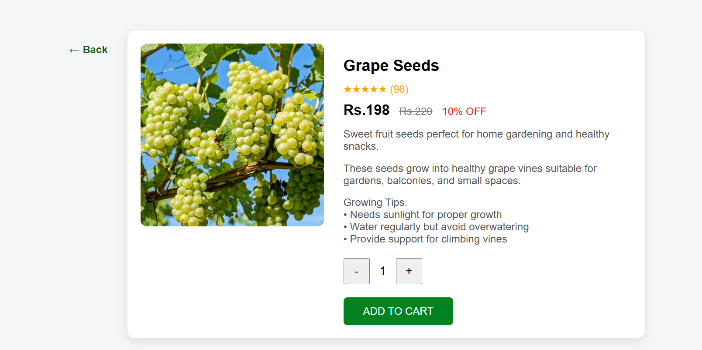
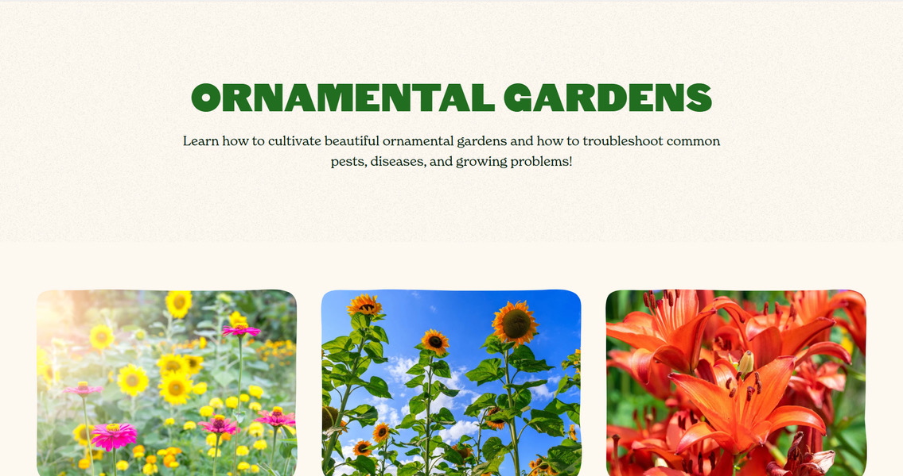
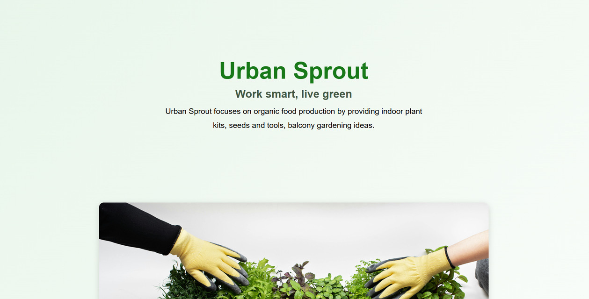
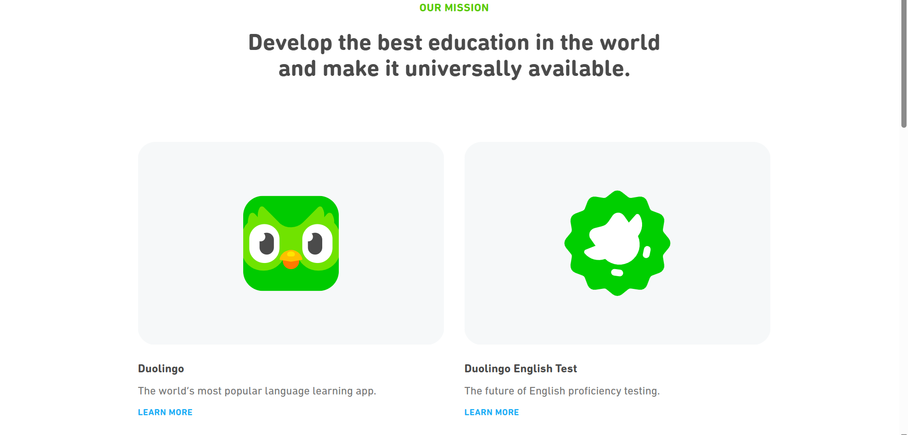
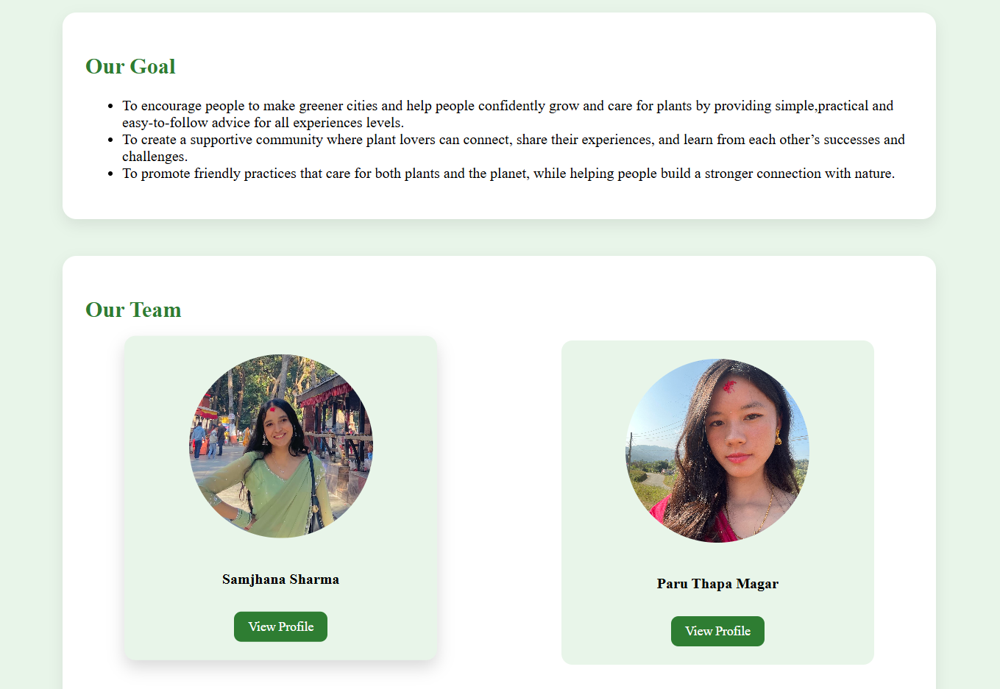

Website comparisons & design references for UrbanSprout


The home page hero section was inspired by the design and layout of AeroGarden.
Reference Website:
https://scottsmiraclegro.com/en-us/aerogarden.html
Checked on:April 28th, 8:00AM
| Feature | Similarities | Differences | Improvements |
|---|---|---|---|
| Hero Banner | Both use a full-width image with text overlay | AeroGarden uses a dark overlay with promotion text | Cleaner text layout with brand tagline |
| Call to Action | Both have a prominent CTA button | AeroGarden uses a dark pill-shaped button | Green button matches brand color |
| Typography | Both use large bold white text on the hero | AeroGarden uses a single large headline | Tagline + brand name for better hierarchy |
| Imagery | Both use garden/plant photography | AeroGarden uses indoor plant close-up | Outdoor garden image for a natural feel |
| Branding | Both prominently display the brand name | AeroGarden focuses on a seasonal promotion | Brand name as hero title for recognition |


The category section was inspired by the design and layout of AeroGarden.
Reference Website:
https://scottsmiraclegro.com/en-us/aerogarden.html
Checked on:April 28th, 8:00AM
| Feature | Similarities | Differences | Improvements |
|---|---|---|---|
| Layout | Both display categories with images | AeroGarden uses 3 large overlapping panels | Cleaner two-column layout |
| Category Labels | Both show category names over images | AeroGarden uses large bold white text | Subtle label, easy to read |
| Number of Categories | Both highlight main product groups | AeroGarden shows 3 categories | 2 focused categories for clarity |
| Design Style | Both use full-width category images | AeroGarden has a premium editorial feel | Simple beginner-friendly design |
| User Experience | Both help users browse by category | AeroGarden links to a Shop All page | Direct and easy navigation |


The product detail page was inspired by the layout of Foreveryng.
Reference Website:
https://www.foreveryng.com/
Checked on: May 6th, 3:15PM
| Feature | Similarities | Differences | Improvements |
|---|---|---|---|
| Product Image | Both display a large product image | Foreveryng shows multiple image thumbnails | Clean single image for clarity |
| Pricing | Both show original and discounted price | Foreveryng shows reward points and coupons | Simple and easy-to-read pricing |
| Add to Cart | Both have quantity control and cart button | Foreveryng has wishlist and loyalty coupons | Minimal and beginner-friendly cart |
| Design | Both use a two-column layout | Foreveryng has a beauty-focused pink theme | Cleaner and greener aesthetic |


The blog page was inspired by the layout and design of Epic Gardening.
Reference Website:
https://www.epicgardening.com/gardening/ornamental/
Checked on:May 8th, 4:10PM
| Feature | Similarities | Differences | Improvements |
|---|---|---|---|
| Hero Section | Both have a prominent title and description at the top | Epic Gardening uses bold uppercase text and an image grid | Cleaner hero with subtle green background |
| Typography | Both use green as the primary heading color | Epic Gardening uses heavy uppercase font style | Softer, more readable font style |
| Images | Both display garden-related images | Epic Gardening uses a 3-column image grid | Hero image style for a welcoming feel |
| Content Focus | Both focus on gardening topics | Epic Gardening targets ornamental/flower gardens | Focused on urban and indoor gardening |
| Background | Both use a light neutral background | Epic Gardening uses a warm beige/cream tone | Fresh light green background fits the brand |


The About Us page was inspired by the layout and structure of Duolingo.
Reference Website:
https://about.duolingo.com/
Checked on: May 1st, 3:00PM
| Feature | Similarities | Differences | Improvements |
|---|---|---|---|
| Mission Statement | Both clearly state the company mission at the top | Duolingo uses large bold centered text | Friendlier and more personal tone |
| Team Section | Both highlight the people behind the product | Duolingo shows product cards instead of team members | Shows real team photos with names |
| Layout | Both use a clean centered layout | Duolingo uses a white background with grey cards | Soft green background matches brand identity |
| Color Scheme | Both use green as the primary brand color | Duolingo uses bright lime green accents | Deeper forest green for a natural feel |
| Interactive Elements | Both include calls to action | Duolingo has Learn More links per product | Feedback form for direct user engagement |